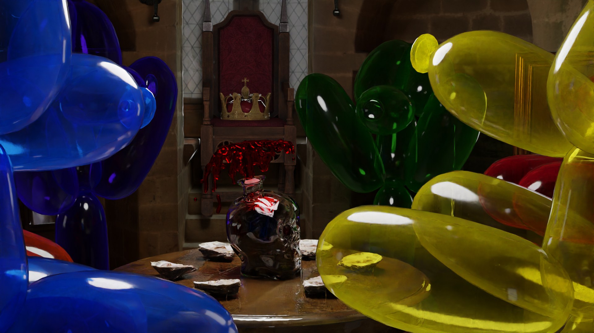

Message of Peace

Calendario Gregoriano

The Last King

Spreco Zero

Non sono un Fantasma
Sono ancora una studentessa ma credo di avere le qualità che stai cercando!
Non ne sei sicur*? Prova a capire chi sono!
Message of Peace
Calendario Gregoriano
The Last King
Spreco Zero
Non sono un Fantasma
Puoi trovare tutti i modi in cui puoi contattarmi in questa sezione del sito!